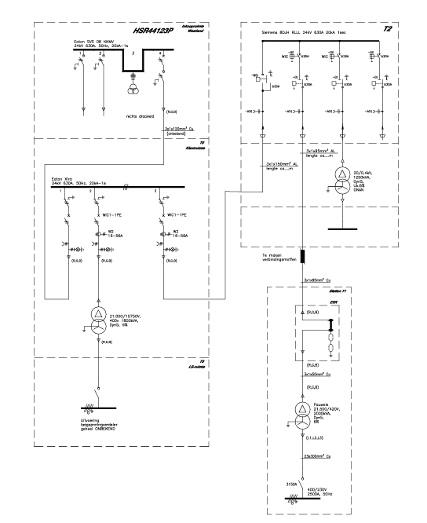

Controle vereist. De reconstructie is een concept. Controleer componenten, verbindingen en standen met het origineel.
1. Inlezen → 2. Nagetekend → 3. Standen → 4. Controle
Single-line inlezen
Kies een foto, afbeelding of PDF.
Nagetekende single-line
Origineel

Reconstructie
Uitgangsstanden controleren
Normaal veld: standaard Gesloten / Niet geaard. Reserveveld: standaard Open / Geaard.
| Component | Veld | Stand / aarding |
|---|---|---|
| VS | ||
| Scheider | ||
| Aardingsschakelaar |